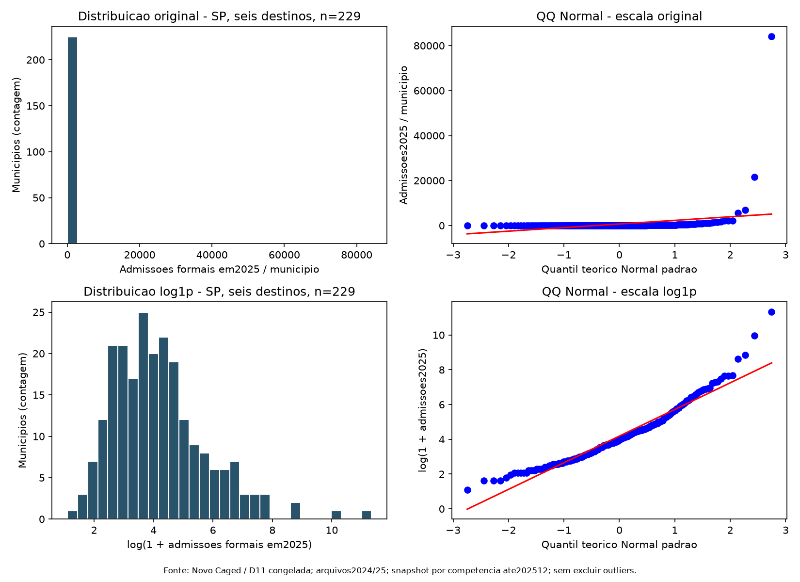

Status: análise preliminar verificada; não é o pacote final de submissão. Os modelos não são vereditos sobre transição de carreira nem probabilidades individuais de emprego.
Novo Caged, SP, seis grupos ocupacionais, todas as escolaridades; municípios com≥10 admissões em2024 no recorte, conforme pré-registro aprovado antes da análise. Snapshots por competência:2024até202412 e2025até202512, sem arquivos/revisões2026. São 229 municípios,229 casos completos para as duas explicativas autorizadas; nenhuma perda municipal por salário/percentual ausente.
O salário é o mensal declarado, nominal, dentro dos seis grupos; valores ausentes/não positivos/infinito não entram na média salarial, mas as admissões são preservadas. A média usa somas e denominadores válidos assinados, não média de médias. MOV+FOR−EXC corrige também escolaridade, soma e denominador salarial. %superior declarado usa graus9/10/11/80 sobre todas as admissões, com desconhecidos à parte. Não houve corte de outliers.
CSV congelado: SHA-256 5dbc73acfb01012a7aa0fa45ef457a7226639a8b48bda85b0389972f99a9a7ee, sob .dados/estatistica/20261115_d11_aceite/, com manifesto dos72 arquivos2024/25. São2.216.198 linhas previamente filtradas por CBO na ingestão, não microdados nacionais completos. A execução não abriu arquivo2026.
O dicionário oficial contém646 entradas de prefixo35: 645 municípios e359999=Sp-Ignorado. Os229 códigos da base pertencem aos645 municípios; não foi necessário remover ou alterar linha da base. A primeira expectativa de645 entradas no dicionário foi corrigida após identificar essa categoria especial, não para mudar resultados.
Variável dos itens probabilísticos: admissões2025 por município no recorte. Média=687,3231; mediana=53; σpopulacional(ddof0)=5740,5799.
Sob a Normal assumida pelo enunciado, P(X

A forte cauda direita é visível. Shapiro: W=0,08441,p=9,69076×10⁻³² na escala original; em log(1+x),W=0,94280,p=8,00650×10⁻⁸. A transformação melhora a legibilidade, não comprova Normalidade. A Normal teórica também admite contagens negativas, um limite relevante para estes dados. O complemento não substituiu os itens obrigatórios nem foi usado para selecionar população, sementes ou significância.
Amostras sem reposição da população observada, seeds42 e43, σda referência(ddof0), erro-padrãoσ/√n. Não foi aplicada correção para população finita; trata-se do modelo didático de referência explicitado, não de uma nova coleta independente.
| Teste | n | α | Alternativa | p-valor | Decisão |
|---|---|---|---|---|---|
| Menor,seed42 | 20 | 6% | μ<μreferência | 0,324213 | Não rejeita H0 |
| Maior,seed43 | 25 | 9% | μ>μreferência | 0,659389 | Não rejeita H0 |
Não rejeitar H0 não prova igualdade de médias nem Normalidade. Não se mudou n,α,seed ou população para obter significância.
Y=admissões2025; explicativas medidas em2024. Previsões pontuais usam um cenário com medianas dos atributos, não um município observado nem inferência de contratação individual.
| Ajuste | Equação arredondada | R² | F | pF |
|---|---|---|---|---|
| Simples | Y=686,6573+0,0000988475×salário2024 | 0,000000363 | 0,00008231 | 0,992769 |
| Múltipla | Y=−1582,2304+0,0034×salário2024+54,2337×%superior2024 | 0,021458 | 2,477885 | 0,086198 |
O salário isolado praticamente não explica a variação do volume municipal; as duas explicativas explicam apenas cerca de2,15%. Não há base para chamar o ajuste de boa previsão geral ou interpretar os coeficientes causalmente. Reportamos pF sem escolher um novoα após observar os valores. Covariâncias, Pearson, coeficientes completos e previsões estão no JSON de aceite. Diagnósticos completos de resíduos, dispersões e discussão acadêmica final ainda precisam ser incorporados à entrega.
Alvo: admissões2025>admissões2024. X contém somente salário médio2024 e %superior2024, sem participação municipal fabricada. Ajuste em183 municípios; teste em46, split80/20 estratificado,seed44,limiar0,5. IDs de treino/teste são disjuntos e estão no JSON.
| Real \ Previsto | Não cresceu(0) | Cresceu(1) |
|---|---|---|
| Não cresceu(0) | 8 | 14 |
| Cresceu(1) | 7 | 17 |
Acurácia de teste=25/46=54,3478%. O desempenho é limitado e a matriz evidencia muitos falsos positivos; não sustenta um veredito de carreira. Não houve troca de seed, limiar, atributos ou população após a avaliação. O teste municipal estratificado desta análise não é o holdout temporal2026 de ML, que permanece fechado.
uv run pytest -q -rs -o addopts='' em main → 227passed, uv run ruff check . → All checks passed, seguido da CLI de base real → saída0 (pwsh-114).pwsh-118).pwsh-119); rótulos corrigidos após inspeção visual, com asserção de diagnóstico numérico inalterado.Ainda não entregue: pacote acadêmico portátil .py+.csv+PDF completo via empacotador, gráficos de dispersão/resíduos e demais revisões finais. Os arquivos-modelo do professor não foram alterados. O CSV original e os Parquets foram preservados; nenhuma edição manual de dado foi usada para melhorar o resultado.